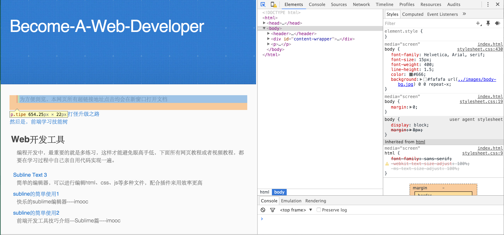
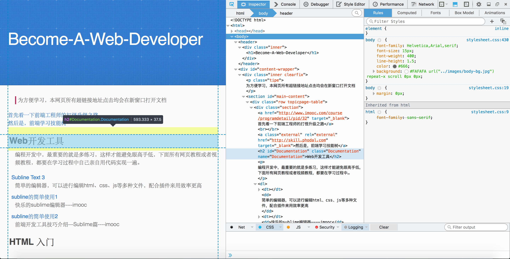

首先看一下前端工程师的打怪升级之路
然后是，前端学习技能树
然后是，前端学习技能树
Web开发工具
编程开发中，最重要的就是多练习，这样才能避免眼高手低，下面所有网页教程或者视频教程，都要在学习过程中自己亲自用代码实现一遍。
- Subline Text 3
- 简单的编辑器，可以进行编辑html、css、js等多种文件，配合插件来用效率更高
- subline的简单使用1
- 快乐的sublime编辑器----imooc
- subline的简单使用2
- 前端开发工具技巧介绍—Sublime篇----imooc
HTML 入门
初级学习
- W3CSchool
- 前端学习亦或是服务器开发的入门标配学习网站，他一个比较好的地方是提供网页编辑器
- Runoob教程网站手机端更方便
- 相对于W3C的界面来说还是比较好看的一个，而且里面的教程涉及的面比W3Cschool里面会广一些，而且这个还有安卓移动app
- HTML完全参考所有HTML/HTML5标签都在这里了
- 一个 HTML 元素综合性参考网址，还有不同浏览器对它们的支持。
- 火狐官方的开发者中心--MDN
- 火狐官方的开发者中心，有中文的开发者中心才是好开发者中心，里面有HTML、CSS、JS等等文档。
- html.net上关于HTML的教程
- 从内容量以及质量上来说没有前面的好，但是都是基础的东西
中级学习
canvas是一个可以使用脚本(通常为JavaScript)在其中绘制图形的 HTML 元素，它可以用于制作照片集或者制作简单或复杂的动画.
- 关于Cavas的教程火狐出品
- 手把手教学，不仅仅是讲解标签如何使用。就网站界面来说，比W3C看着舒服一些。
- 一个英语版本的Cavas教程，也很简单
- 由于是国外服务器，打开会比较慢，但是看里面的教程真的丰富又简单。
CSS 入门
初级学习
- 火狐的CSS直达界面
- 这个教程介绍层叠样式表（CSS），通过具体的实例引导你熟悉基本的CSS功能，多练习这些实例。
- CSS完全参考CSS所有的选择器、属性都在这了
- CSS完整参考，包含Firefox和另外浏览器支持的详细信息。
- html.net上关于CSS的教程
- 从内容量以及质量上来说没有前面的好，但是都是基础的东西
中级学习
- Bootstrap中文网
- 可能是当下最流行、最火的前端框架了
- Bootstrap框架下的Less
- 使用less能够更舒服的进行布局代码的编写，特别是这个在Bootstrap框架内
- 基于Bootstrap的模板
- Bootstrap是当下最热的前端框架，这是一个基于它的模板网站，提供丰富的UI组件
- 一个讲CSS布局的学习网站
- 已经掌握了CSS的选择器、属性和值。那么是时候了解一些布局了
Javascript 入门
初级学习
- 火狐JS教程直达页
- 一个为所有的学习者从初级到高级的全面、定期更新的 JavaScript 指南。
中级学习
- JQuery文档中文网
- JQuery中文API详解
- W3C上JQuery的教程
- W3C上的JQuery教程直达页
JQuery是一个JavaScript库。jQuery极大地简化了JavaScript编程。在开始学习jQuery 之前，应该对以下知识有基本的了解：HTML、CSS、JavaScript
jQuery Mobile是创建移动 web 应用程序的框架。jQuery Mobile 适用于所有流行的智能手机和平板电脑。jQuery Mobile 使用 HTML5 和 CSS3 通过尽可能少的脚本对页面进行布局。
前端资源整理
浏览器
做前端的需要使用浏览器进行页面效果展示，以及调试界面，后面还会有浏览器适配问题这个大坑。
第一个推荐使用Google家的Chrome浏览器，而且他家的还有开发者中心提供一些开发相关的文档，但是由于大陆不能google，导致很多有用的东西都看不到，搜不到，不过chrome的调试功能还是很强大的，调试功能也比较多，所以推荐第一款使用这个浏览器进行界面的调试。
然后就是FireFox了，火狐官方也提供了开发者中心，文档教程什么的也都有，但是火狐浏览器这个界面我是看不下去。不过好在它调试功能也比较齐全，开发者模式比软件做的漂亮多了。
视频教学
- 慕课网免费学习编程语言的视频网站
- 作为主流的免费学习的网站之一，慕课网提供了全面并且各阶段的教程视频、同时也有一些小demo现教现卖
- 51学院
- 51CTO的教程网址，但是里面的教程大部分都是免费的，即使收费也仅仅是注册个会员，获得个金币什么的
学习资源
- WEB前端资源网
- 主要提供一些前端实用教程，以及web前端的资源整合，包括框架、js库、动画、UI设计、网站模板等等
- 汇集了一些资源的pdf51CTO上的
- 网上扒的一个关于前端知识的pdf汇总
- 前端技能整理的项目
- 前端开发知识结构整理，包括编辑器、框架、前后端书籍推荐等等。
- 上一个项目最终的知识网图这个网址，慎点！
- 集结数十位前端工程师总结的前端开发知识网图，仅仅是展示。
- web高级学习资料整理
- 里面罗列出了一些学习导向以及书籍推荐
设计相关
- dribbble
- 一个出色的设计师作品展示网站，都是比较好的作品，国外服务器，有些慢
- UI中国
- 里面有许多的优秀界面设计，比dribble访问速度快多了，而且里面还有一些教程
- web模板网站
- 提供一些现成的web模板，而且是免费的，简单的英文网站
- Httpster
- 这个设计网站也还行，没上面的好，这个更倾向于产品的展示用途
- PS学习
- 慕课上视频讲解如何使用PS进行图像处理
代码片段
- 一个前端个人博客？
- 反正里面代码片段很多
- 前端代码片段
- 一个国内的前端代码片段网站
- HTML5、CSS代码片段网站
- 虽然这里也有教程，但是作用比较大的还是里面的代码片段
- CSS代码片段网站
- 一个英文网站，提供一些代码片段
前端论坛
- StackoverFlow
- 一家国外的英文程序员问答网站
- SegmentFault
- 国内的程序员问答网站，可以当做是上面的stackoverFlow中国版
- 前端乱炖
- 论坛类型的网站
- 51CTO
- 国内的一家关于计算机技术的论坛网站，包括web前端、安全、运维、云计算等等多种方面的技术分享
- 前端笔记
- 一个关于前端开发的学习记录，资源分享网站